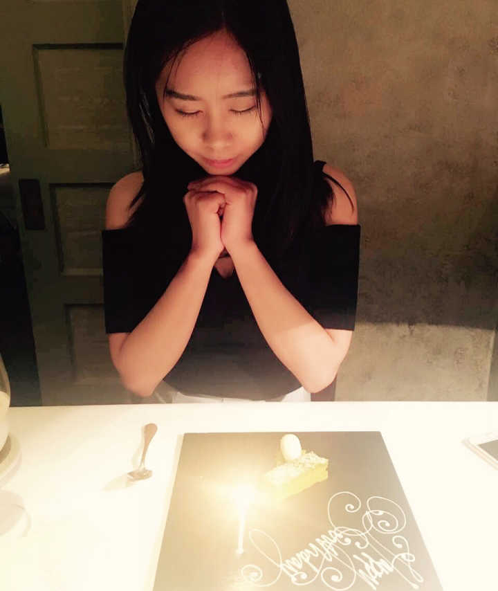
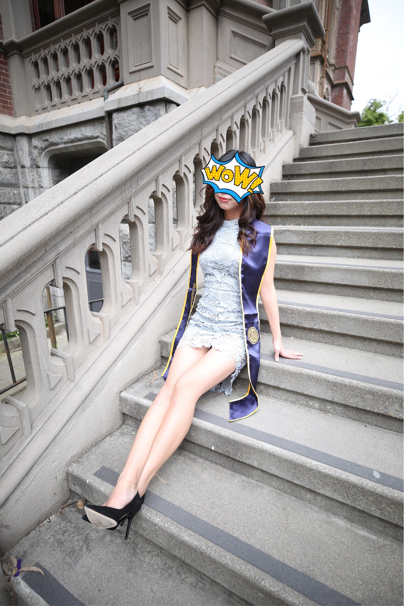
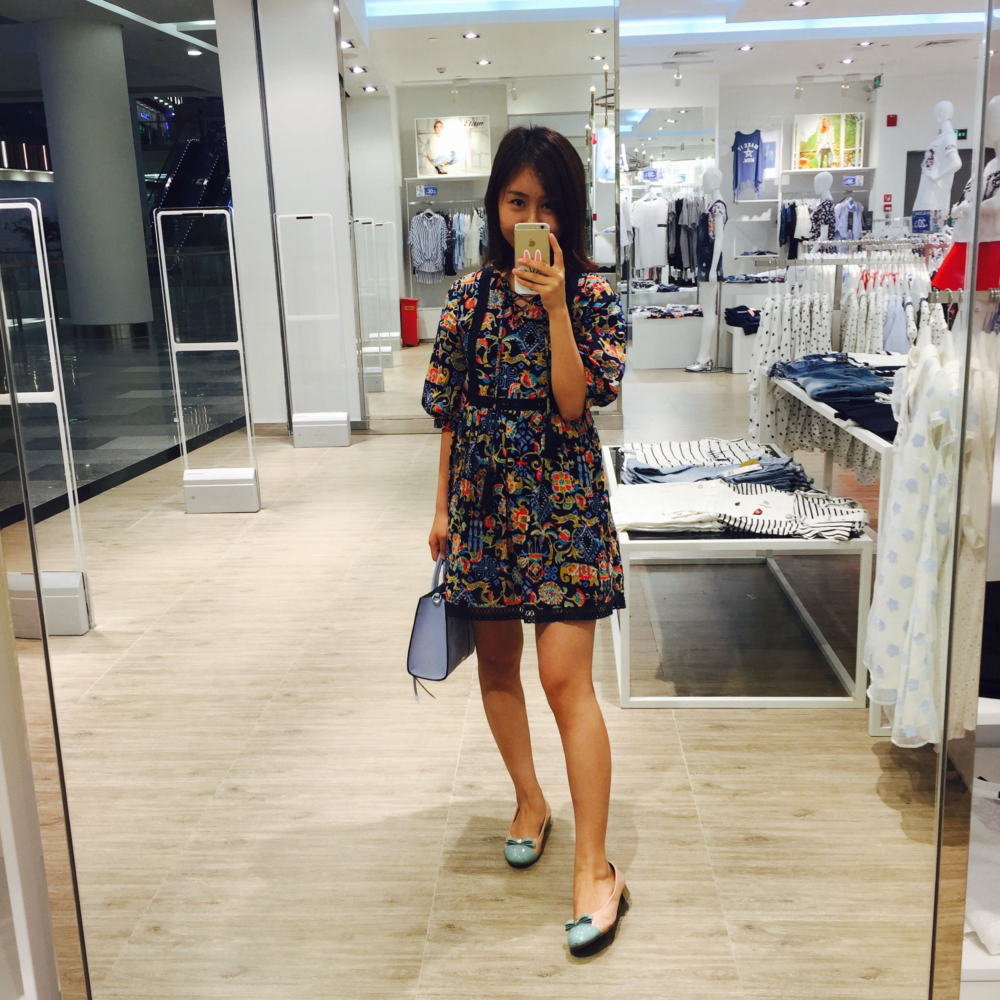
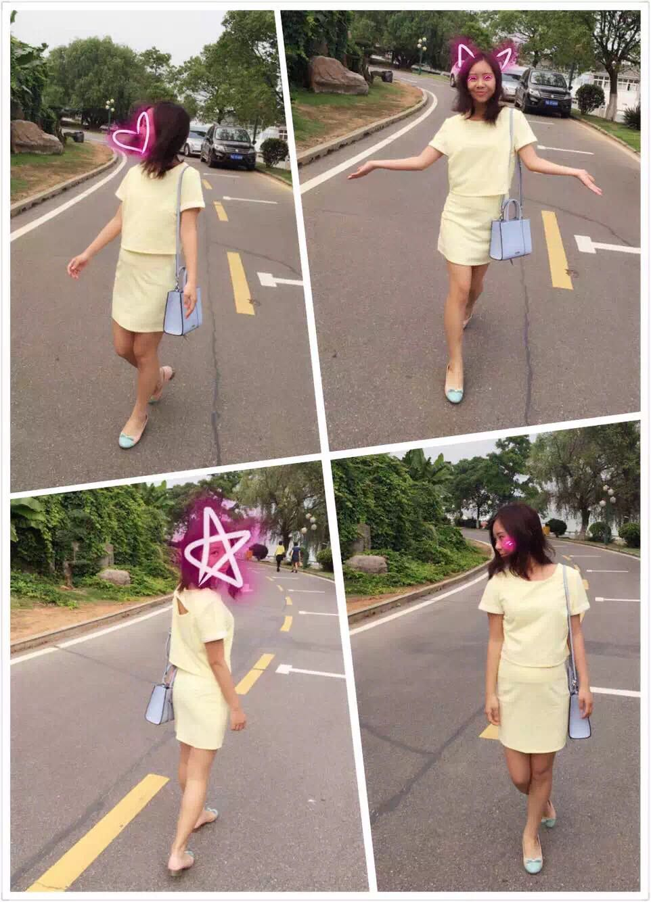
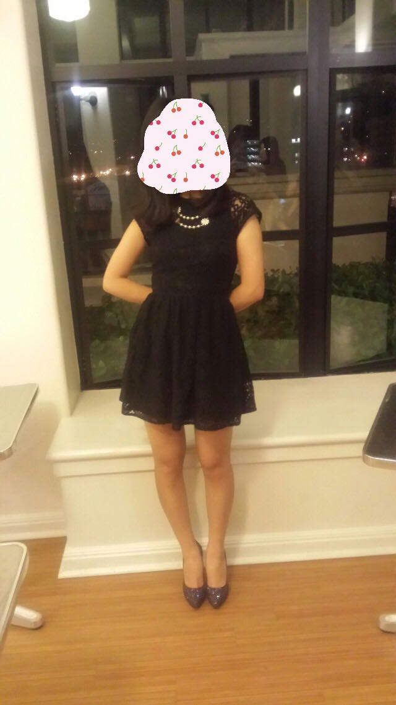
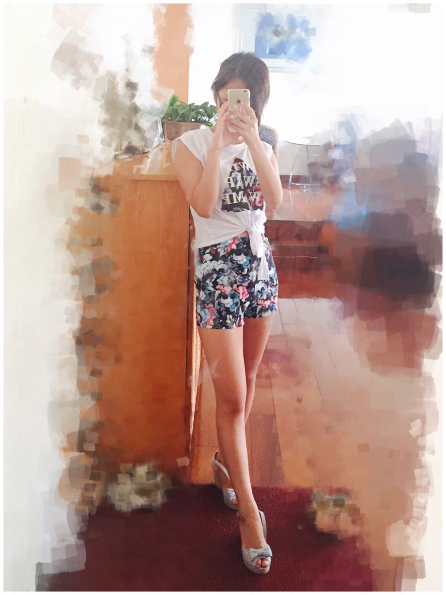
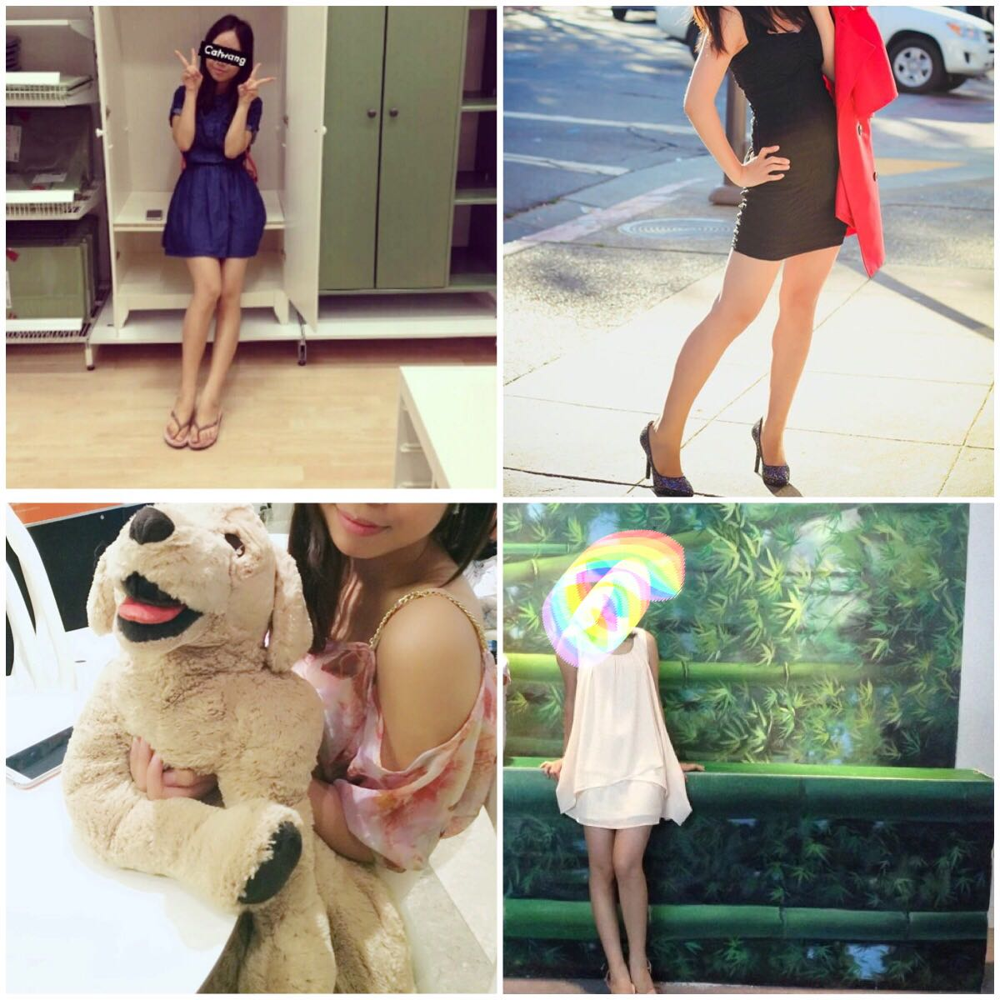

名字:
Ms狐狸
性别:女

介绍:随便写来玩玩
问题
答案
新建于:2015-07-24 08:13:51 AM，更新于2017-05-10 06:43:58 AM
Pre上一页
Next下一页
跳页:
正文: 更一个无p毕业照花絮好了

终于毕业啦！
-----------------------------------------------------------这题放着让我来答！
衣柜里超短裙少说也有二十条＋，素色的印花的，修身的略宽松的，简洁的华丽的，我！都！有！基本上所有朋友看我的衣柜都会说，你怎么这么多裙子！（然而这只是我宿舍里的衣柜，没有机会给大家看我家里的衣柜了……）长裙我也有，但是基本夏天是不会穿的，长裙基本上都是春秋加一件飘逸的外套穿出去拉风的哈哈。虽然如此，每次逛街还是忍不住要剁手哈哈！
--------------------------------------------------------------------------------------------------------
－ 首先，我衣柜里夏天的衣服都是什么样子的？
逛街 平底鞋+连衣裙 （btw ⬆️这是［etam艾格］的店）
半身裙（背后有镂空）
正式一点/出去玩的时候 小黑裙+高跟鞋
是不是只有裙子呢？当然不是 也有裤子的。
所以，基本上夏天，我日常穿衣就是95%的时候各种短裙，连衣裙半身裙……；剩下的时候，特别是去游乐园，有活动需要运动，穿裙子不太方便的时候就穿短裤啦！
－ 其次，为什么选择短裙？
热！生在火炉城市，长在火炉城市，夏天随随便便40+度，太阳直射的地方真的是可以煎鸡蛋。在这种地方，真的是不得不什么短穿什么啊！否则出门，分分钟衣服全部湿透！（其实，我也不止一次的想过，武汉这夏天热到我恨不得什么都不穿就裸奔出门啊 自由自在感受一下热风习习 - - ）
梅雨！武汉夏天经常突然间变个天，开始疯狂的下雨，（欢迎大家最近去武汉看海，听说全部都淹了lol），是那种大到连雨伞都撑不住，雨滴大到恨不得可以把伞打穿的那种，就算是站在屋檐下等雨停，雨滴捡起来的水花也是分分钟把穿长裤或者中裤的人的裤管全部打湿。而穿超短裙的人简直横行无压力啊。甚至还会踩踩水，超级爽的！
显瘦！每年过年之后，夏天之前那段时候，我都是一边想着春天来了觉得有点小开心，一边想着马上就要到马路上各路人马秀身材秀长腿的时节，而我过年又是各种走亲访友吃了不少东西都不敢上称，又觉得特别伤感。基本上，每年春天，吃东西都是要减少一点量的，饭可以少吃几口，饮料可以少喝几次，就是想着夏天要来了（哇哈哈哈哈）！所以好不容易夏天来了，要对得起我之前这个季度少吃的米少喝的饮料少吃的肉的啊，此时不秀更待何时！
显身材比例！裙子短不说，我还要高腰线！不仅可以遮一下小肚子，还可以拉长身材比例。你说这应该就够了把？那哪够啊，我还要穿高跟鞋，三厘米不行，至少五厘米起步！这么看过去，才真是“海啊看过去都是水，那谁谁谁看过去都是腿”！（求轻拍……我就yy一下）基本上，本来比例五五开的我，变成了三七开…… 想想就有点小开心呢～
btw 小心机：可以背后镂个空，腰上镂个空，低胸也不错，body-cut那种紧身的也不错哟～真的只是因为镂空更凉快～～～还有，那种稍微有点弹性的裙子，可以往再小一号买，更显瘦哦，比如图三那个黑色的裙子就是0码；但是还是要可以接受的范围内哦，否则太紧的裙子就算穿上去了，出门活动一下会超级难受的。
－ 穿短裙要注意什么？
注意保护自己。（“人与人之间的信任呢？” 我们又不熟干嘛信任你？）
所以太透的裙子记得抹胸，白色或者肤色都可以，有些衣服黑色的抹胸会有特别的效果，但是除此之外其他的颜色，我个人是不会有的。
下身裙摆比较宽松的裙子，一定记得要打底裤！个人推荐纯黑色，也不用什么蕾丝花边，就最基本的就好。特别是现在很多楼梯扶手电梯，要么是坡度比较陡，要么是左右的屏障是透明的。基本上上个电梯，站在你下面几级台阶的人，电梯下的人，往上抬个头，都是很有可能看到裙底的……（对，就是这样 - -）甚至都不用专门站到你身后，也不用弯腰。所以上楼梯，座扶手电梯的时候，还是最好用手稍微紧一紧裙摆哦。
（想到什么再来补充）
但是这么说来，优点可是远远多过要注意的点的哦——
所以！汉子们，有没有动心？？？？？？？？？
（你以为我会说“那么让我们一起穿超短裙吧！！！”这样吗？呵呵）
但是想想，如果以后出门走楼梯坐电梯，能看到汉子的裙底……我还是……不能接受
所以 男！生！请！不！要！穿！超！短！裙！
请！不！要！穿！超！短！裙！
请！不！要！穿！超！短！裙！
（这才是我写这么多乱七八糟的东西的本意）
再随意补一张图

Pre上一页
Next下一页
跳页: